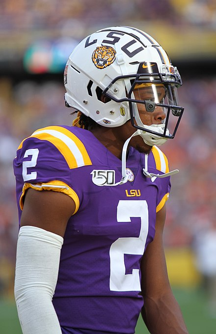

College JJ
In 2017, JJ didn't do much at LSU, but he was always fighting for that top spot
In 2018, Jefferson was their leading receiver in 2018 with 54 catches for 875 yards and six touchdowns. He has cemented his status as LSU's number one and looked to show himself as the best wide reciever in all of football.
In 2019, Jefferson had his breakout year. With quarterback Joe Burrow at the helm, Jefferson flourished in a hyper-aggressive LSU offense. He finished with 111 receptions, 1.540 yards and 18 touchdowns, all which were among the higheset in the country
After this electric season, Jefferson declared for the NFL draft, knowing that he was one of the top stars in the country. Sports Analysts said JJ would go in the first round, cementing his college career as one to be remembered for the ages.